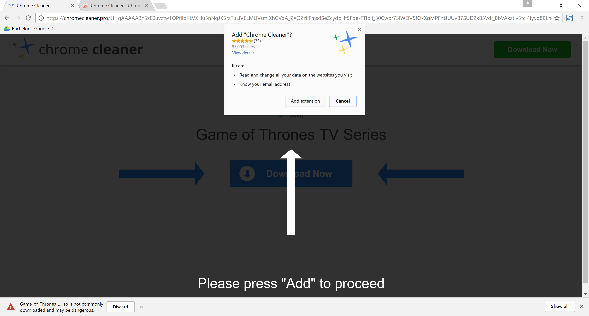
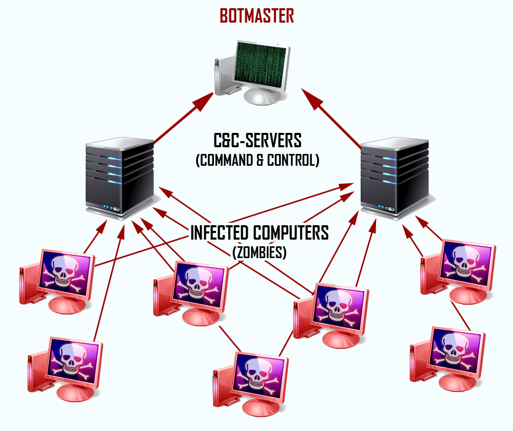
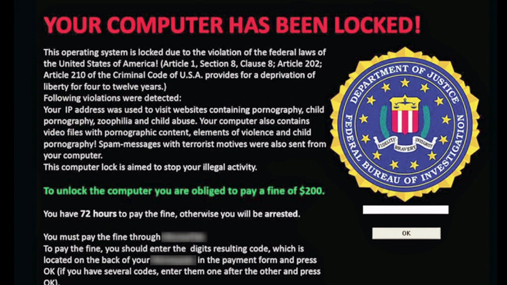

MALWARE
Malware is short for “malicious software”. Program code that performs hidden actions we do not wish for. The term “malware” is a collection of several sub-categories, which differs based on how, if it spreads and the actions it performs. You might be infected without there being any obvious red flags indicating so.
HISTORY
Malware started as a proof-of-concept. Written simply to prove that it was possible to do. The payload was usually just something annoying. Maybe moving the cursor around at random, or deleting all the users files.
The example used above where it was disguised as a antivirus program has been common for a long time. However, in recent years something called ransomware has become a bit too popular. Much like it’s name suggest, it takes your files as hostage, and requires a ransom in order to release them back to you. We will go through how to deal with this later on. The point being that malware evolves rapidly with the technology available.
Seeing as artificial intelligence and deep learning is growing at a fast phase, malware will only get better, as in worse for the user. To elaborate on that, they will have potential to become highly intelligent. It will need a very alert and skeptical user to detect it early on.
FOUR STAGES
Malware usually has four stages. First there’s the warhead. This is how the infection happens. While there’s a lot of different ways of getting infected, the most common ones are with the help of security holes in software user errors. The user might never notice, or have to interact with the malware. The other way, is by social engineering. Essentially meaning to fool or "hack" the user. It could be an email from someone claiming you won a lot of money, where the attached files infects your computer when you open it
Next up is propagation, this stage is all about spreading. There are some malware that doesn't do this, but most do. Same as above, there are two ways for this to happen; without the users interaction, and with. Some try to spread by sending a message over email or chat to your contacts, pretending it’s written by you. Or it can infect a file you are intentionally sending to someone. This means YOU spread the malware, even if you are not aware of the file being infected. Spreading can also be done through files you put on a USB drive, or to network drives. After spreading the malware can go dormant (no further activity for now), or it can continue spreading.
The third step is stealth. This describes how it’s presenting itself. Some malware behave like a legitimate application. Ironically enough, it’s not uncommon that it disguises itself as a program looking for malware, then play on fear by telling you that pretty much every inch of your computer is critically damaged. However, when you try to make it fix the damage, it tells you the full version of the software is needed. This full version will more than likely be a paid application. When you go to buy it, there is a large chance that the site or application used to pay for the software will steal all your payment information. It’s also fully possible the malware stays hidden.
Last, but in no way the least important stage, we have the payload. Simply put; the purpose of the malware. What it does once the target is infected. There’s no real limit to what this can be. It could make changes to your operating system, encrypt your computer and tell you that you have to pay in order to unlock it (more about this in ransomware), or even damage your hardware.
THE PHASES
- Warhead: How the infection happens.
- Progagation: How it's spread.
- Stealth: How it disguises itself.
- Payload: It's purpose.
SUB-CATEGORIES
As previously mentioned, the sub-categories aren’t all that different. The main difference usually being it’s propagation and/or payload. We can begin with viruses. This is a term often used to describe any type of malware. It’s specific specifications is however that it’s spread once opened by the user. It will spread to existing files, which means that it can usually spread to other computers easily. This both by the user sending the files to others, or if you are connected to a network with other computers and share files this way.
Next up are worms. Worms are very similar to viruses, the difference being that it isn’t dependent on infecting files the user transfers to other places for spreading. Instead it is highly independent without any interaction from the user.
A trojan (named after the trojan horse) is a piece of malware that hides under an application. This application seemingly functions completely as it normally would, allowing the trojan to operate in the dark without arising suspicion. It tends to stay in the host application. While the host application can be different things, but lets use a browser plugin as an example. You could download the plugin from an official depository (like chrome webstore or the Firefox add-ons page ) , thus appearing completely legitimate. This can get access to everything you use the browser for. If you’re using the browsers built-in password storage, this could get compromised. Or they can record all inputs. This means that Even if the connection is secured with HTTPS, the plugin will have access to it before the encryption happens.
The wish for more functionality in documents like word files and similar has lead to more vulnerabilities. Something called a macrovirus infects documents, along with their templates, making all future documents infected as well.
Rootkits has the ability to change parts of you operating system. It can hide itself, and other malware by modifying what it shown to you. Your computer could be used as a part of a criminal file sharing network, while both the disk space used, and network traffic is completely hidden from the user.
A botnet (robotic network), is a network of infected computers. Usually in zombie mode (inactive) until the network reaches a certain size. Then it can be used for several things, DDoS (Distributed Denial of Service) as an example. In short, every computer sends many requests to a server, making it overwhelmed and inaccessible. The owner of an infected computer could risk penalty unless there’s proof of the malware being the cause of the attack.
DEFENCE
So, how do we avoid having to deal with this? Unless you stop using a computer, phone, and all other devices that potentially could get infected, there is no way to be completely safe. You can however take precautions in order to minimize the chance.
While it’s common to believe that you will notice the infection, that’s not always the case. Another thing is that you want to spot it very early. Before the damage begins, a well-written malware will be very hard to detect at this stage, and in some cases it can stay hidden.
Keeping a backup of all personal files, anything you cannot risk losing, is of great importance. Should you get infected, you can perform a clean install on your computer, without important files being gone. Keeping both the operating system and antivirus up-to-date. This can in most cases be handled automatically, with no interaction needed from the user.
To underline the importance of keeping the antivirus updated, we can practically go as far as to call an outdated antivirus useless. Caution can be your best friend. Someone messaged you a link? Take a critical look at it before you click it. When you’ve clicked it, check the address bar to make sure it’s really the domain it’s pretending to be.
STAY SAFE
- Keep all software up to date.
- Scan your computer frequently.
- Install a good antivirus software.
RANSOMWARE
This is a new kind of malware. What it does is encrypt your files when infected. After that's done, you are told to make a payment to get your files back. Defence against them depends on how sophisticated they are written, but today there are several tools available. This means you can in many cases decrypt the files yourself, or even stop it before that becomes necessary.
While frequent backups will help, making it too convenient is not a good idea. Many of them does a good job searching for backup solutions in order to either encrypt or corrupt them. Keep the backup disconnected, and only connect when you know your computer is clean, and while you are not actively using it.

Follow us on social media!